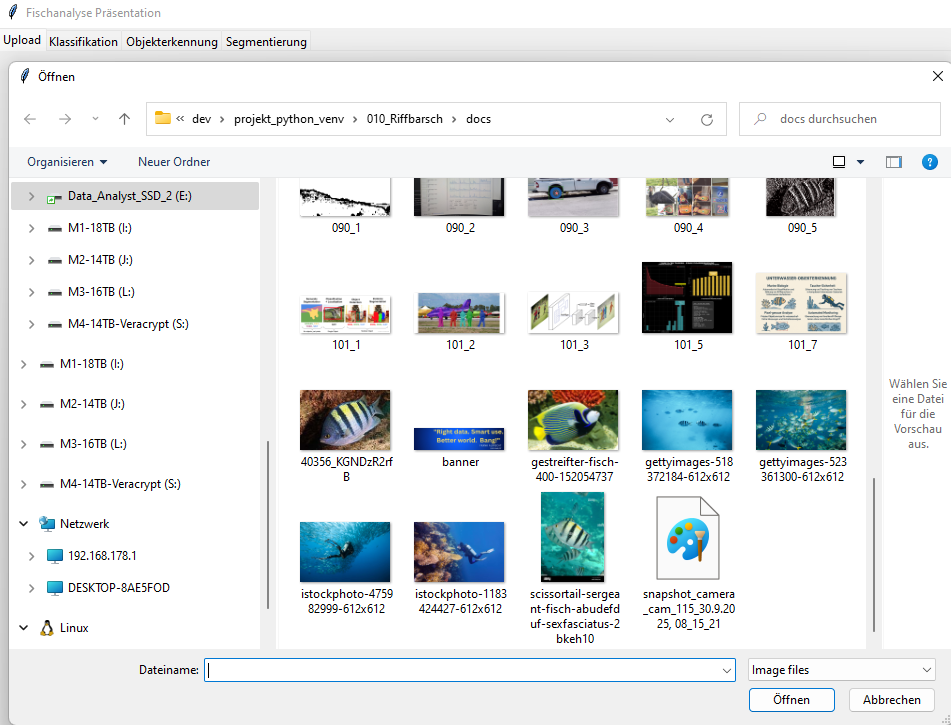
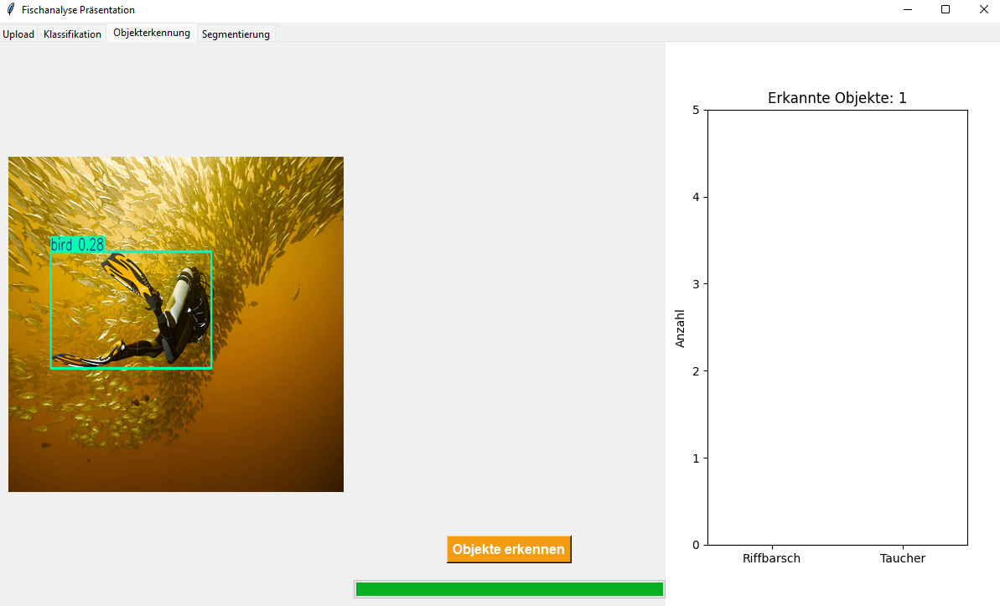
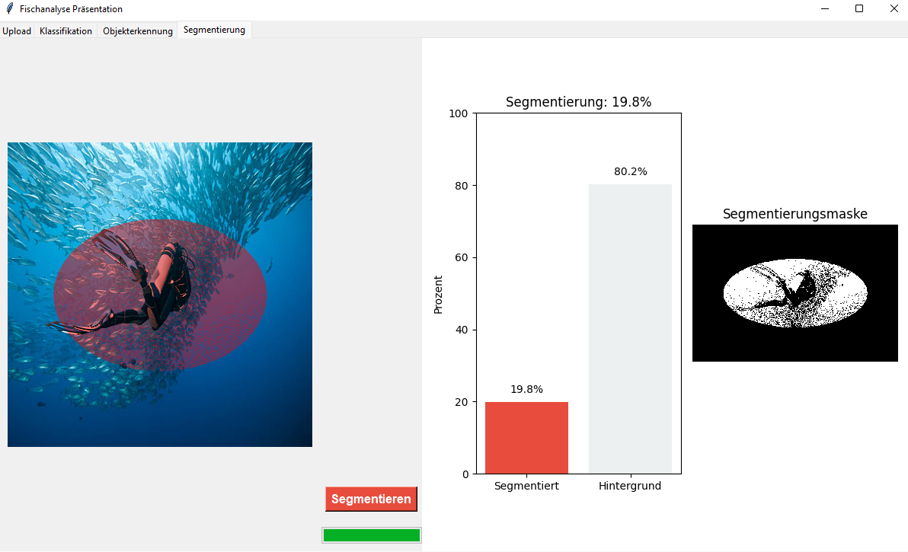
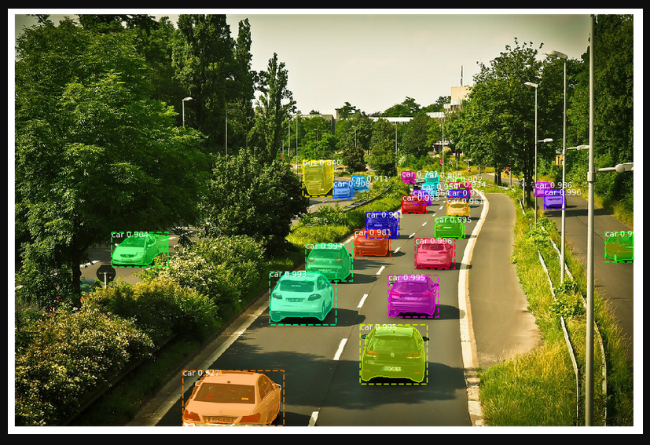

🐠 Fischanalyse GUI Präsentation
main.py - Interaktive Demonstration für Computer Vision Modelle

🎯 Anwendungsüberblick
Diese GUI-Anwendung demonstriert drei verschiedene Computer Vision Techniken für die Unterwasser-Bildanalyse.
GUI (Graphical User Interface): Eine grafische Benutzeroberfläche, die es ermöglicht, komplexe KI-Modelle ohne Programmierung zu bedienen - einfach durch Klicken und Drag & Drop.
🏗️ Anwendungsarchitektur
- Upload Bildauswahl und RGB-Analyse
- Klassifikation ResNet-18 Objektklassifizierung
- Objekterkennung YOLOv8 Detection
- Segmentierung Pixel-Level Masken
💡 Live-Processing: Alle drei KI-Modelle werden parallel in separaten Threads ausgeführt, wodurch die Benutzeroberfläche reaktionsfähig bleibt und Ergebnisse in Echtzeit angezeigt werden.

📂 Tab 1: Upload & Bildanalyse
🖼️ Bildverarbeitung Pipeline
Der Upload-Tab kombiniert Bildvorschau mit statistischer Farbanalyse.
RGB-Histogramm: Ein Diagramm, das die Verteilung der Rot-, Grün- und Blauwerte in einem Bild zeigt. Hilft dabei, die Farbcharakteristik und Belichtung zu verstehen.
# Automatische Bildgrößenanpassung
img.thumbnail((500,500))
# RGB-Kanal Separation für Histogramm
r,g,b = img.split()
ax.hist(np.array(r).flatten(), bins=256, color='r', alpha=0.5)
⚡ Parallel Processing
Nach dem Upload werden drei Background Threads gestartet:
- Thread 1: ResNet-18 Klassifikation
- Thread 2: YOLO Objekterkennung
- Thread 3: Segmentierung (Dummy)
Threading: Parallel ausgeführte Programmteile, die es ermöglichen, mehrere KI-Modelle gleichzeitig zu berechnen, ohne dass die Benutzeroberfläche "einfriert".

🎯 Tab 2: Deep Learning Klassifikation
🏗️ ResNet-18 Modell
Modell: ResNet-18 mit Transfer Learning
Klassen: 2 (Riffbarsch, Taucher)
Input: 224x224 RGB normalisiert
Output: Wahrscheinlichkeitsverteilung
Klassen: 2 (Riffbarsch, Taucher)
Input: 224x224 RGB normalisiert
Output: Wahrscheinlichkeitsverteilung
ResNet (Residual Network): Eine spezielle Art neuronaler Netzwerke mit "Sprungverbindungen", die es ermöglichen, sehr tiefe Netzwerke zu trainieren ohne dass die Gradienteninformation verloren geht.
🔄 Preprocessing Pipeline
# Standard ImageNet Normalisierung
transforms.Normalize(
mean=[0.485, 0.456, 0.406],
std=[0.229, 0.224, 0.225]
)
Normalisierung: Anpassung der Pixelwerte auf einen Standardbereich, damit das neuronale Netzwerk optimal lernen kann. Die Werte stammen aus dem ImageNet-Dataset.
📊 Echzeit-Visualisierung
Die Softmax-Wahrscheinlichkeiten werden als interaktives Balkendiagramm dargestellt.
⚡ Performance: GPU-Unterstützung aktiviert für beschleunigte Inferenz mit automatischem CPU-Fallback bei fehlender GPU.

🔍 Tab 3: Objekterkennung (YOLO)
⚡ YOLOv8 Implementation
Framework: Ultralytics YOLOv8n
Task: Object Detection
Modell: Custom trained "best.pt"
Output: Bounding Boxes + Labels
Task: Object Detection
Modell: Custom trained "best.pt"
Output: Bounding Boxes + Labels
YOLO (You Only Look Once): Ein ultra-schneller Objekterkennungsalgorithmus, der ein Bild nur einmal betrachtet und dabei alle Objekte und ihre Positionen gleichzeitig identifiziert.
🖼️ Visualisierung Pipeline
# YOLO Prediction mit automatischem Overlay
results = yolo_model.predict(img, verbose=False)
result_img = results[0].plot() # Automatische Box-Visualisierung
📈 Bounding Box Analyse
Zusätzlich zur Objekterkennung wird eine statistische Analyse der Bounding Box Dimensionen erstellt.
Bounding Box: Ein Rechteck, das ein erkanntes Objekt umschließt. Die Größenverteilung gibt Aufschluss über die Objektgrößen im Bild und kann für Qualitätskontrolle genutzt werden.
- Breiten-Histogramm: Horizontale Objektausdehnung
- Höhen-Histogramm: Vertikale Objektausdehnung
- Überlagerung: Vergleich der Dimensionen

✂️ Tab 4: Segmentierung
🎭 Dummy Segmentierung
Aktuell implementiert als Proof of Concept mit simulierten roten Masken.
Segmentierung: Die pixelgenaue Abgrenzung von Objekten im Bild. Im Gegensatz zu Bounding Boxes wird hier die exakte Form des Objekts erfasst, nicht nur ein umschließendes Rechteck.
🔧 Entwicklungsstatus: Dieser Tab zeigt die vorbereitete Infrastruktur für Mask R-CNN oder SAM-Integration. Die rote Dummy-Maske kann durch echte Segmentierungsmodelle ersetzt werden.
🎨 Alpha-Composite Technik
# Transparente Masken-Überlagerung
mask = Image.new("RGBA", img.size, (255,0,0,50)) # 50% Transparenz
img_overlay = Image.alpha_composite(img.convert("RGBA"), mask)
Alpha-Compositing: Eine Bildverarbeitungstechnik, die transparente Ebenen überlagert. Dadurch bleiben das Originalbild und die Segmentierungsmaske gleichzeitig sichtbar.
📊 Flächenanalyse
Berechnung und Visualisierung des segmentierten Flächenanteils als Balkendiagramm.

🛠️ Technische Implementation
📦 Dependency Stack
- PyTorch Deep Learning Framework
- Torchvision Computer Vision Modelle
- Tkinter Native GUI Framework
- PIL/Pillow Bildverarbeitung
- Matplotlib Wissenschaftliche Plots
- Ultralytics YOLO Implementation
🔧 Modell-Pfade Konfiguration
# Zentrale Modell-Registry
RESNET_PATH = "models/resnet/fisch_v2_Z30_20250924_0727_resnet.pt"
YOLO_PATH = "models/yolov8n/riffbarsch_taucher_run/best.pt"
MASK_PATH = "models/sam_vit/mask_model.pth"
🎛️ User Experience Features
- Progress Bars: Visuelle Feedback für Modell-Berechnungen
- Responsive UI: Threading verhindert UI-Blockierung
- Live Updates: Ergebnisse werden in Echtzeit angezeigt
- Multi-Modal: Drei verschiedene KI-Techniken parallel
🚀 Deployment Ready: Standalone-Anwendung mit automatischer Hardware-Detection (GPU/CPU) und integriertem Error-Handling für Demo-Umgebungen.